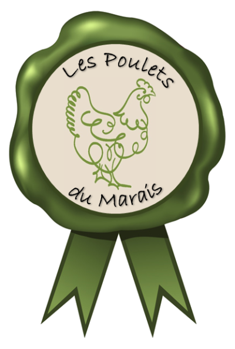

<md-toolbar>
    <div class="sidemenu-opener" layout="row" layout-align="start center" span="3">
        <button md-mini-fab class="no-ripple" (click)="opened = !opened">
            <md-icon>menu</md-icon>
        </button>
        <div layout-small-padding></div>
        
    </div>
    <span class="fill-space headline text-center"> Les Poulets du Marais</span>
    <button md-button></button>
</md-toolbar>
<div class="body">
    <div layout="row">
        <app-menu [class.closed]="!opened" span="3"></app-menu>
        <div layout-fill-width class="content" [class.opened]="opened">
            <router-outlet></router-outlet>
        </div>
    </div>
    <footer></footer>
</div>


